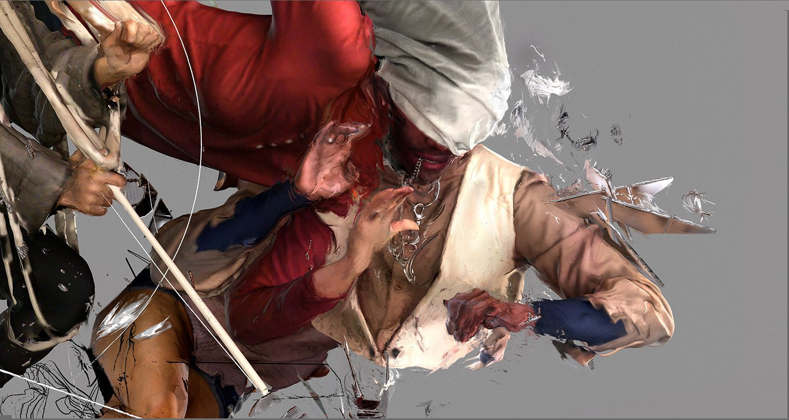
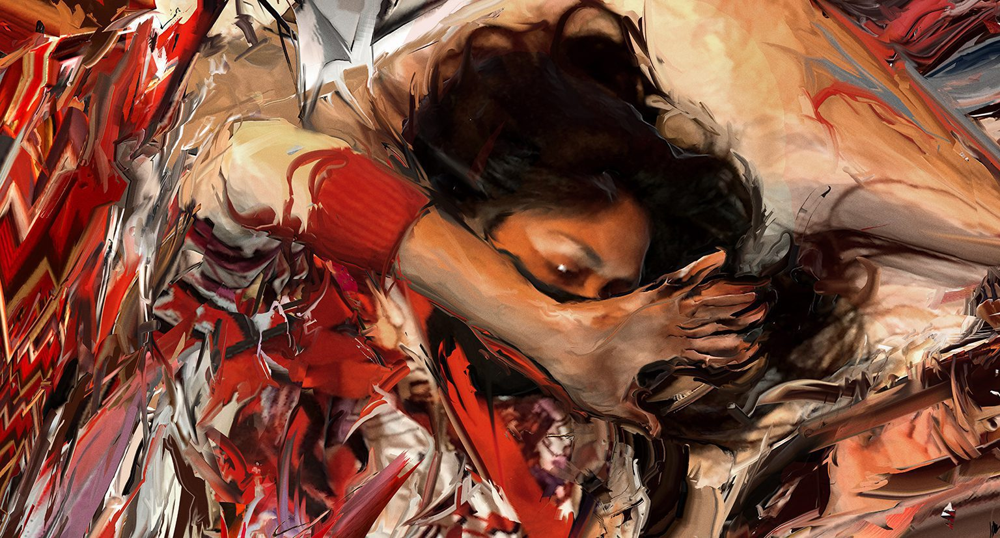
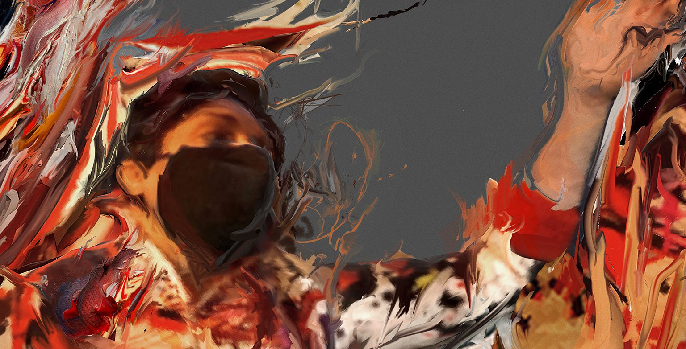
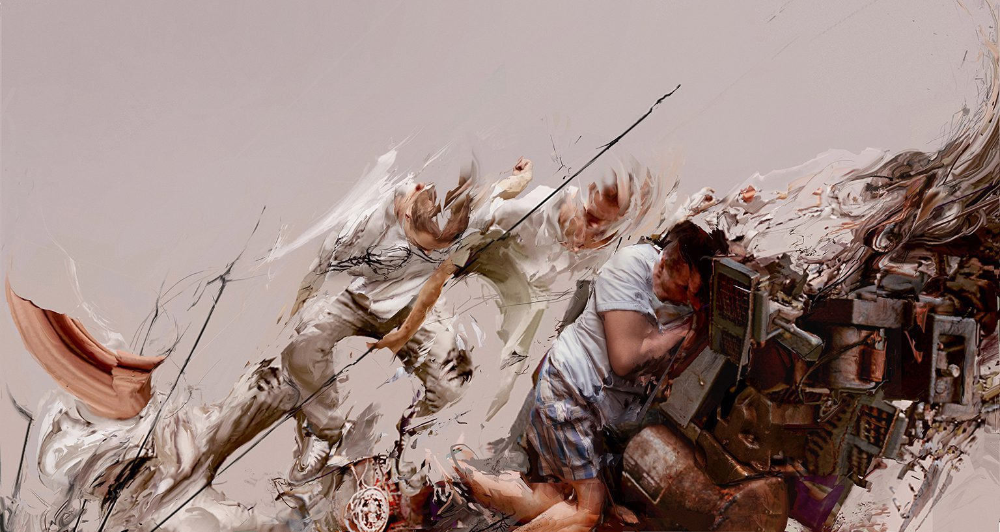
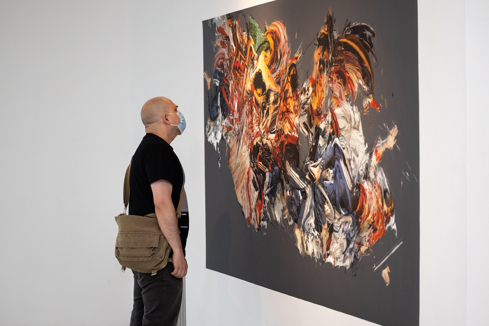
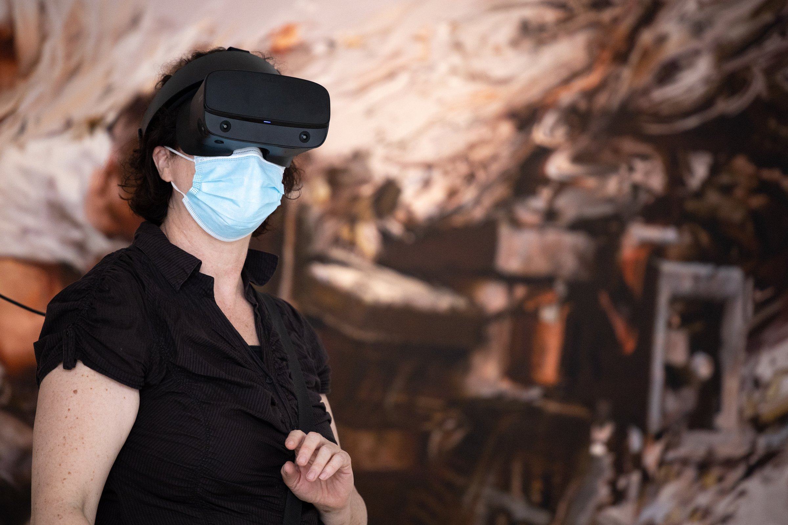
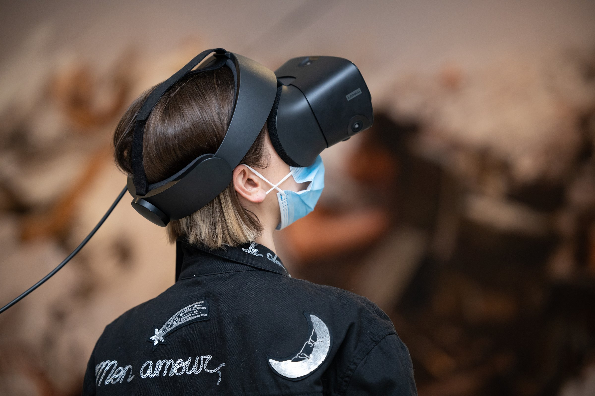
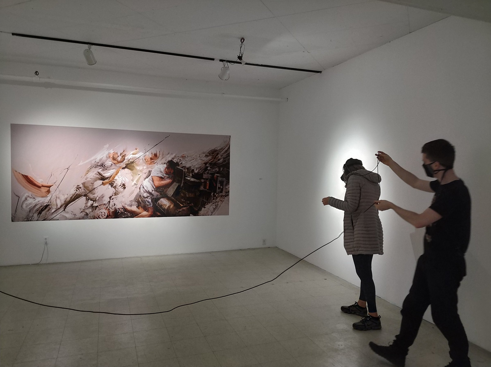

Lucas Aguirre’s first international exhibition. A painter whose VR worlds carry the same passion and sensibility as his canvases, exploring a new hybrid language where the splatter of real paint and the trace of the pencil merge with reimagined scanned bodies.
La première exposition internationale de Lucas Aguirre. Un peintre dont les mondes en réalité virtuelle portent la même passion et la même sensibilité que ses toiles, explorant un nouveau langage hybride où les éclaboussures de peinture réelle et la trace du crayon se fondent à des corps numérisés réinventés.
For Aguirre, the trip between painting and virtual reality is a continuous dance. He jumps from theatrical 3D-scanned models to oil paint strokes to final composition in VR, and back again. The loop runs both ways: he also prints images captured from his virtual worlds and paints directly over them, folding digital output back into physical gesture. The frenetic leaps between ideas and mediums reveal a passionate exploration of digital tools. The results are worlds that demand to be inhabited and felt fully, complex environments that still carry the unique trace of the human hand.
Pour Aguirre, le trajet entre la peinture et la réalité virtuelle est une danse continue. Il passe de modèles théâtraux numérisés en 3D aux touches de peinture à l’huile, puis à la composition finale en réalité virtuelle, avant de revenir en arrière. La boucle fonctionne dans les deux sens : il imprime aussi des images captées dans ses mondes virtuels et peint directement par-dessus, ramenant le rendu numérique vers le geste physique. Ces bonds frénétiques entre les idées et les médiums révèlent une exploration passionnée des outils numériques. Il en résulte des mondes qui demandent à être habités et pleinement ressentis, des environnements complexes qui portent encore la trace unique de la main humaine.
The physical works presented are a dynamic series of horizons, merging figures filled with intricate details and dense movement. These large compositions prepare the ground for the VR component: a boundless white void with a single spiritual entity and a soundscape by Franco Bellavita. In this series, Aguirre explores the constant tension of instability. We see a dematerialization of matter, of reality. Emotions become visible, wildly emanating through the air. It is the feeling of standing at a precipice—everything on the verge of collapse and renewal at once, an infinite moment charged with the raw excitement of whatever comes next.
Les œuvres physiques présentées forment une série dynamique d’horizons, où se fondent des figures chargées de détails minutieux et de mouvements denses. Ces grandes compositions préparent le terrain pour le volet en réalité virtuelle : un vide blanc sans limites, habité par une seule entité spirituelle et par une trame sonore de Franco Bellavita. Dans cette série, Aguirre explore la tension constante de l’instabilité. On assiste à une dématérialisation de la matière, du réel. Les émotions deviennent visibles, émanant follement dans l’air. C’est la sensation de se tenir au bord d’un précipice, tout au bord de l’effondrement et du renouveau à la fois, un instant infini chargé de l’excitation brute de ce qui vient ensuite.

A frail equilibrium, a dematerialization of matter and reality. The beauty of weakness at the moment before collapse.
Un équilibre fragile, une dématérialisation de la matière et du réel. La beauté de la faiblesse à l’instant qui précède l’effondrement.



The gallery walls held large-scale giclée prints while visitors explored the VR component in the centre of the room. Installation photographs by Mike Patten.
Les murs de la galerie présentaient des épreuves giclée grand format, tandis que les visiteurs exploraient le volet en réalité virtuelle au centre de la salle. Photographies d’installation par Mike Patten.



